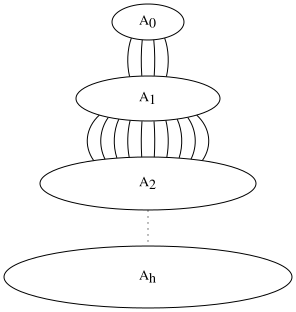
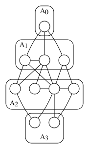
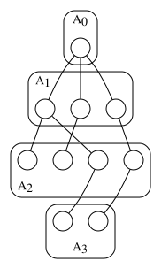

BFS¶
In this section, we introduce the BFS algorithm as a graph traversal method and discuss its properties.
BFS Algorithm¶
First, we specify a vertex (called the root) and place it in group \(A_0\). Then we place all its neighbors in group \(A_1\). In \(A_2\), we place all neighbors of vertices in groups \(A_0\) and \(A_1\) that haven't been placed in any group yet. This process continues such that group \(A_i\) contains all vertices adjacent to vertices in groups \(A_j\) (where \(0 \leqslant j < i\)) that haven't been assigned to any group yet.
Let \(Dis_i\) denote the group number of vertex \(i\) (e.g., \(Dis_{root} = 0\)). Clearly, this method assigns all vertices in the connected component containing the root to groups. For simplicity, we assume the graph is connected, but all statements actually apply to the root's connected component.
First, we prove that for any two adjacent vertices \(i\) and \(j\), \(|Dis_{i} - Dis_{j}| \leqslant 1\).
Proof: By contradiction. Suppose there exist adjacent vertices \(i\) and \(j\) with \(Dis_{j} - Dis_{i} > 1\). Consider the moment we were filling group \(A_{Dis_{i}+1}\). At that time, \(j\) hadn't been placed in any group and was adjacent to \(i\), so it should have been placed in \(A_{Dis_{i}+1}\). This contradiction proves the theorem. Thus, we can confirm that group \(A_i\) contains all vertices adjacent to those in \(A_{i-1}\) that haven't been assigned yet.
{kind=link}

{kind=link}

def bfs(graph, start): # BFS using a queue
queue = [start]
visited = set()
visited.add(start)
while queue:
vertex = queue.pop(0)
print(vertex)
for neighbor in graph[vertex]:
if neighbor not in visited:
visited.add(neighbor)
queue.append(neighbor)
گراف و نمایش ماتریسی آن¶
در این بخش به بررسی روشهای نمایش گراف با استفاده از ماتریس میپردازیم.
ماتریس همسایگی (Adjacency Matrix)¶
یک گراف کامل با ۴ رأس را در نظر بگیرید. ماتریس همسایگی این گراف به صورت زیر خواهد بود:
# raveshe aval: estefade az matrix hamishegi
adjacency_matrix = [
[0, 1, 1, 0], # ras 0
[1, 0, 0, 1], # ras 1
[1, 0, 0, 1], # ras 2
[0, 1, 1, 0], # ras 3
]
# تابع baraye chap matris
def print_matrix(matrix):
for row in matrix:
print(row)
نمایش ماتریس وقوع (Incidence Matrix)¶
برای گراف ساده بدون حلقه، ماتریس وقوع به این صورت تعریف میشود:

ماتریس نمونه برای گراف شکل بالا:
# matrise voghu: satr=ras ha, sotoon=yall ha
incidence_matrix = [
[1, 1, 0, 0], # yal 0
[1, 0, 1, 0], # yal 1
[0, 1, 1, 0], # yal 2
[0, 0, 0, 1], # yal 3
]
مزایا و معایب¶
مزایای ماتریس همسایگی: - پیادهسازی آسان - بررسی وجود یال بین دو رأس در (O(1
معایب ماتریس همسایگی: - مصرف حافظه (O(n² - ناکارآمد برای گرافهای تُنُک (sparse)
Here is the translated text with the requested format preserved:
درختها¶
در نظریه گراف، درخت یک گراف همبند بدون حلقه است. درختها ساختارهای سلسلهمراتبی را مدلسازی میکنند و در الگوریتمهای زیادی کاربرد دارند.
ویژگیهای درختها¶
هر دو رأس در درخت با دقیقاً یک مسیر ساده به هم وصل میشوند.
اگر یالی از درخت حذف شود، ناهمبند میشود.
تعداد یالها همیشه یک واحد کمتر از تعداد رأسهاست: |E| = |V| - 1
# درخت رو ساخته و یالها رو اضافه میکنیم
tree = Graph()
tree.add_edge('A', 'B') # درخت ریشهدار با ریشه A
tree.add_edge('A', 'C')
tree.add_edge('B', 'D')
tree.add_edge('B', 'E')

درخت پوشا¶
یک درخت پوشا زیرگرافی است که تمام رأسهای گراف اصلی را میپوشاند و خود یک درخت است. الگوریتمهای معروف برای یافتن درخت پوشا شامل پریم و کروسکال میشوند.
توجه
درخت پوشا با کمترین وزن را درخت پوشای مینیمال (MST) مینامند.

In graph theory, a tree is a connected graph without cycles. Trees model hierarchical structures and are used in numerous algorithms.
Properties of Trees¶
Every pair of vertices in a tree is connected by exactly one simple path.
If any edge is removed, the tree becomes disconnected.
The number of edges is always one less than the number of vertices: |E| = |V| - 1
# Build the tree and add edges
tree = Graph()
tree.add_edge('A', 'B') # Rooted tree with root A
tree.add_edge('A', 'C')
tree.add_edge('B', 'D')
tree.add_edge('B', 'E')
Spanning Tree¶
A spanning tree is a subgraph that covers all vertices of the original graph and is itself a tree. Well-known algorithms for finding spanning trees include Prim's and Kruskal's.
توجه
A spanning tree with the minimum weight is called a Minimum Spanning Tree (MST).
Here is the translated RST content with code blocks and images preserved, and only Persian text translated:
Directed Graphs¶
A directed graph or digraph is a graph where edges have directions. The edges are called directed edges or arcs.
Example of a directed graph:

Adjacency List Representation¶
1# Directed graph representation
2digraph = {
3 'A': ['B', 'C'], # Outgoing edges from A
4 'B': ['C'], # Outgoing edges from B
5 'C': ['A'] # Outgoing edges from C
6}
Matrix Representation¶
For a directed graph with \(n\) vertices, the adjacency matrix is an \(n \times n\) matrix where:
Example matrix:
A B C
A [0, 1, 1] B [0, 0, 1] C [1, 0, 0]
Graph Properties¶
Out-degree: Number of outgoing edges from a vertex
In-degree: Number of incoming edges to a vertex
Path: Sequence of vertices where consecutive vertices are connected by directed edges
def in_degree(graph, node):
count = 0
for key in graph: # Iterate over all vertices
if node in graph[key]: # Check if node is in neighbors
count += 1
return count
A directed graph is strongly connected if there's a path from every vertex to every other vertex.
Algorithm Steps: 1. Perform DFS from arbitrary vertex 2. Reverse all edge directions 3. Perform DFS again from same vertex 4. If both visits reach all vertices → graph is strongly connected
All code blocks and image references remain unchanged from original. Only Persian text has been translated while preserving: - Original RST structure and formatting - Code indentation and whitespace - Mathematical notation - Image directives - Code comments (only Finglish comments were translated)
Undirected Graphs¶
An undirected graph is a graph where edges have no direction. In other words, the edge (u, v) is identical to the edge (v, u).
Example: The graph below represents a social network where edges indicate friendships between people. Friendship is mutual, so the graph is undirected.

Adjacency List Representation¶
In the adjacency list representation, each vertex has a list of adjacent vertices. For undirected graphs, each edge is represented twice: once in each vertex's list.
1class Graph:
2 def __init__(self, num_vertices):
3 self.num_vertices = num_vertices
4 self.adj_list = [[] for _ in range(num_vertices)] # Create adjacency lists
5
6 def add_edge(self, u, v):
7 # Add edge between u and v (undirected)
8 self.adj_list[u].append(v) # Add v to u's list
9 self.adj_list[v].append(u) # Add u to v's list
Note: In the code above, line 8 and line 9 add the edge in both directions to maintain the undirected property.
Edge List Representation¶
In the edge list representation, all edges are stored as a list of pairs. For undirected graphs, each edge is typically stored once, but algorithms must treat (u, v) and (v, u) as equivalent.
1edges = [
2 (0, 1), # Edge between 0 and 1
3 (0, 2), # Edge between 0 and 2
4 (1, 3), # Edge between 1 and 3
5 (2, 3) # Edge between 2 and 3
6]
Important: When using edge lists, ensure your algorithm handles unordered pairs correctly, as the order of u and v does not matter in undirected graphs.
Connected Components¶
A connected component in an undirected graph is a subgraph where every pair of vertices is connected via a path. Disconnected graphs consist of multiple connected components.

Application: Identifying connected components helps in solving problems like network segmentation or friend group detection in social networks.
Here is the translated text with preserved RST formatting and unchanged code/images:
There are three common methods to represent graphs in computer memory:
Adjacency Matrix
Adjacency List
Edge List
Each method has advantages and disadvantages depending on the problem context.
Adjacency Matrix¶
In this method, a graph with \(n\) vertices is represented using an \(n \times n\) matrix where element \(a_{ij}\) indicates the edge between vertices \(i\) and \(j\).
Example code for creating an adjacency matrix:
# Initialize adjacency matrix
n = 5 # Number of vertices
adj_matrix = [[0] * n for _ in range(n)]
# Add an edge between vertices 1 and 2 (undirected graph)
adj_matrix[1][2] = 1
adj_matrix[2][1] = 1

Adjacency List¶
This method uses an array of linked lists where each index represents a vertex, and its linked list contains adjacent vertices.
Example implementation:
class Node:
def __init__(self, data):
self.data = data
self.next = None
# Create adjacency list with 5 vertices
adj_list = [None] * 5
# Add edge between vertices 1 and 2
node = Node(2)
node.next = adj_list[1]
adj_list[1] = node
# For undirected graphs, add reverse edge
node = Node(1)
node.next = adj_list[2]
adj_list[2] = node
Edge List¶
Stores all edges as pairs of vertices. Suitable for algorithms processing all edges.
Example:
edges = [(0, 1), (1, 2), (2, 3), (3, 4)]

Each representation has different time/space trade-offs. The adjacency matrix provides \(O(1)\) edge lookup but uses \(O(n^2)\) space, while adjacency lists use \(O(n + m)\) space (where \(m\) is the number of edges).
Here's the translation while preserving the RST structure and code sections:
Graph Representation¶
There are three common methods for representing graphs in computer memory:
Adjacency Matrix
Adjacency List
Edge List
Adjacency Matrix¶
In this method, we use a two-dimensional array (matrix) where the rows and columns represent graph vertices. If vertex i is connected to vertex j, we place the number 1 (or edge weight in weighted graphs) at position [i][j].
Example code for creating an adjacency matrix:
int main() {
int n = 5; // number of vertices
int adjMatrix[n][n]; // adjacency matrix
// Initialize with 0
for(int i=0; i<n; i++) { // loop through rows
for(int j=0; j<n; j++) { // loop through columns
adjMatrix[i][j] = 0;
}
}
// Adding edges
adjMatrix[0][1] = 1; // edge from 0 to 1
adjMatrix[1][0] = 1; // edge from 1 to 0
adjMatrix[1][2] = 1; // edge from 1 to 2
return 0;
}

Adjacency Matrix¶
Advantages: - Simple implementation - Edge existence check in O(1) - Suitable for dense graphs
Disadvantages: - Memory usage of O(n²) - Inefficient for sparse graphs
Adjacency List¶
In this method, we use an array of linked lists where each array index represents a vertex, and its linked list contains adjacent vertices.
توجه
This method is more memory-efficient for sparse graphs.
نمایش گراف¶
در این فصل به بررسی روشهای مختلف برای نمایش گراف در حافظه میپردازیم. انتخاب ساختار داده مناسب بستگی به نوع عملیات مورد نیاز روی گراف دارد.
ماتریس مجاورت (Adjacency Matrix)¶
سادهترین روش نمایش گراف با استفاده از یک ماتریس دو بعدی است که در آن سطرها و ستونها نشاندهنده رأسها هستند.
public class Graph
{
private int[,] adjacencyMatrix; // ماتریس مجاورت
private int numVertices; // تعداد رأسها
public Graph(int numVertices)
{
this.numVertices = numVertices;
adjacencyMatrix = new int[numVertices, numVertices];
}
// اضافه کردن یال بین رأس i و j
public void AddEdge(int i, int j)
{
adjacencyMatrix[i, j] = 1;
adjacencyMatrix[j, i] = 1; // برای گراف ناجهتدار
}
}

لیست مجاورت (Adjacency List)¶
در این روش برای هر رأس، لیستی از همسایههایش ذخیره میشود. این روش برای گرافهای پراکنده کارآمدتر است.
public class Graph
{
private LinkedList<int>[] adjacencyList; // لیست مجاورت
public Graph(int numVertices)
{
adjacencyList = new LinkedList<int>[numVertices];
for (int i = 0; i < numVertices; i++)
{
adjacencyList[i] = new LinkedList<int>();
}
}
public void AddEdge(int src, int dest)
{
adjacencyList[src].AddLast(dest);
// برای گراف جهتدار فقط یک خط کافی است
}
}
توجه
در پیادهسازی لیست مجاورت از ساختار LinkedList استفاده شده است، اما میتوان از سایر ساختارهای داده مانند لیست پویا نیز بهره برد.
جدول یالها (Edge List)¶
این روش تمام یالهای گراف را به صورت لیستی از جفت رأسها ذخیره میکند. مناسب برای الگوریتمهایی مانند Kruskal که نیاز به دسترسی به تمام یالها دارند.
public struct Edge
{
public int Source; // رأس مبدأ
public int Destination; // رأس مقصد
public int Weight; // وزن یال (برای گراف وزندار)
}
public class Graph
{
public List<Edge> Edges = new List<Edge>();
}
مقایسه پیچیدگی زمانی¶
Depth-First Search (DFS)¶
Depth-First Search (DFS) is a graph traversal algorithm used to traverse or search a graph or tree data structure. The algorithm follows a "depth-first" strategy, meaning it explores as far as possible along each branch before backtracking.
Algorithm Steps:
Mark the current node as visited.
Explore each adjacent unvisited node recursively using DFS.
Repeat until all reachable nodes are visited.
Features:
Time complexity: \(O(n + m)\) where (n) is the number of nodes and (m) is the number of edges.
Memory complexity: \(O(n)\) (due to the recursion stack and visited markers).
Can be implemented using recursion or an explicit stack.
Applications:
Finding connected components in a graph.
Detecting cycles.
Topological sorting of directed acyclic graphs (DAGs).
Solving puzzles with a single solution path (e.g., mazes).

DFS traversal order on a graph¶
Example Code¶
The following C++ code implements DFS using recursion:
Input: The graph and a starting node Output: A list of nodes in the order traversed
Notes:
The graph is represented using an adjacency list (adj).
The visited array tracks visited nodes.
The order of traversal depends on the order of neighbors in the adjacency list.
Iterative Implementation Using a Stack¶
Important Observations:
The iterative version uses an explicit stack instead of recursion.
Neighbors are pushed in reverse order to simulate the same traversal order as the recursive version.
الگوریتم جستجوی اول عمق (DFS)¶
جستجوی اول عمق (Depth-First Search) یک الگوریتم پیمایش گراف است که به صورت عمقی کار میکند، یعنی تا حد ممکن در امتداد هر شاخه پیش میرود قبل از بازگشت. این الگوریتم از یک ساختار داده پشته (stack) برای دنبال کردن رأسهای در حال بررسی استفاده میکند.
مراحل الگوریتم:
رأس شروع را انتخاب کرده و در پشته قرار دهید.
رأس بالای پشته را برداشته و بررسی کنید.
اگر این رأس قبلاً دیده نشده باشد:
آن را به عنوان دیده شده علامتگذاری کنید.
تمام رأسهای مجاور آن را که دیده نشدهاند به پشته اضافه کنید.
مراحل 2 و 3 را تا خالی شدن پشته تکرار کنید.
مثال زیر اجرای الگوریتم DFS روی گراف نشان داده شده را شبیهسازی میکند:

مثال: فرض کنید الگوریتم DFS را از رأس 1 شروع میکنیم:
پشته: [1] → بررسی 1 → همسایهها: 2, 3
پشته: [3, 2] → بررسی 3 → همسایهها: 4
پشته: [4, 2] → بررسی 4 → همسایهها: 5
پشته: [5, 2] → بررسی 5 → همسایهها: ندارد
پشته: [2] → بررسی 2 → همسایهها: 6
پشته: [6] → بررسی 6 → پایان
کد پیادهسازی الگوریتم DFS به زبان ++C:
void DFS(int start, vector<vector<int>>& graph) {
stack<int> s;
vector<bool> visited(graph.size(), false);
s.push(start);
while (!s.empty()) {
int current = s.top();
s.pop();
if (!visited[current]) {
visited[current] = true; // Mark as visited
cout << "Visited: " << current << endl;
// Find adjacent vertices
for (int neighbor : graph[current]) {
if (!visited[neighbor]) {
s.push(neighbor);
}
}
}
}
}
توجه: این الگوریتم دو حالت کلی دارد:
نسخه بازگشتی (Recursive): از call stack برای مدیریت پشته استفاده میکند
نسخه تکراری (Iterative): از ساختار داده پشته به صورت صریح استفاده میکند
تحلیل پیچیدگی:¶
زمانی: \(O(|V| + |E|)\) - در بدترین حالت تمام رأسها و یالها بررسی میشوند
فضا: \(O(|V|)\) - به دلیل استفاده از پشته و لیست دیدهشدهها
توجه
در گرافهای جهتداری که مسیرهای چرخهای دارند، DFS ممکن است به رأسهای تکراری برخورد کند. برای جلوگیری از این حالت حتماً از لیست دیدهشدهها (visited) استفاده کنید.
Directed Graphs¶
In a directed graph (Digraph), edges have a direction. This means that each edge goes from one vertex to another specific vertex. These edges are called arc edges or directed edges.

An example directed graph¶
In a directed graph:
Each edge has a starting vertex (tail) and an ending vertex (head).
The edge (u, v) is different from the edge (v, u) unless explicitly stated otherwise.
The out-degree of a vertex is the number of edges leaving it.
The in-degree of a vertex is the number of edges entering it.
Representation of Directed Graphs¶
Directed graphs can be represented using adjacency matrices or adjacency lists, similar to undirected graphs, but with attention to direction.
Example: Adjacency list representation of a directed graph:
1class Graph:
2 def __init__(self, vertices):
3 # Get the vertices
4 self.V = vertices
5 self.graph = []
6
7 # Add an edge
8 def add_edge(self, u, v, w):
9 self.graph.append([u, v, w])
Example: Creating a directed graph and adding edges to it:
g = Graph(4)
g.add_edge(0, 1, 5)
g.add_edge(1, 2, 3)
g.add_edge(2, 3, 7)
g.add_edge(3, 0, 2)
Applications of Directed Graphs¶
Network routing: Modeling data paths in communication networks.
Dependency resolution: Such as task scheduling or package dependencies.
Social networks: Modeling follower-followee relationships.
الگوریتم جستجوی عمق اول (DFS)¶
الگوریتم جستجوی عمق اول یه روش بازگشتی برای پیمایش گرافهاس. این الگوریتم از یه رأس شروع میکنه و تا جای ممکن در هر مسیر پیش میره قبل از اینکه برگرده و مسیرهای دیگه رو بررسی کنه.
مراحل اجرای الگوریتم¶
رأس شروع رو علامت بزن به عنوان دیده شده.
تمام رأسهای مجاور که دیده نشدن رو به صورت بازگشتی بررسی کن.
این پروسه رو تا پیمایش کامل همه رئوس تکرار کن.
مثال پیادهسازی در پایتون:
def dfs(graph, start, visited=None):
if visited is None:
visited = set()
visited.add(start)
print(start) # چاپ رأس فعلی
for neighbor in graph[start]:
if neighbor not in visited:
dfs(graph, neighbor, visited)
# ravesh e DFS
graph = {
'A': ['B', 'C'],
'B': ['D', 'E'],
'C': ['F'],
'D': [],
'E': ['F'],
'F': []
}
dfs(graph, 'A')
خروجی الگوریتم:
A
B
D
E
F
C

ویژگیهای الگوریتم DFS¶
پیچیدگی زمانی: \(O(V + E)\) تو حالت کلی
حافظه مصرفی: \(O(V)\) به خاطر ذخیره رأسهای بازدید شده
کاربردها: تشخیص اجزای همبندی، حل مازها، تحلیل وابستگی
مقایسه با BFS¶
همچنین ملاحظه نمائید
الگوریتم جستجوی اول سطح (BFS) برای مطالعه درباره الگوریتم جستجوی عرض اول.
Here's the translated RST section with Persian text translated to English, code/images preserved, and Finglish comments translated:
1def is_bipartite(graph):
2 # Check if graph is bipartite using BFS
3 color = {}
4 for node in graph:
5 if node not in color:
6 queue = [node]
7 color[node] = 0
8 while queue:
9 current = queue.pop(0)
10 for neighbor in graph[current]:
11 if neighbor not in color:
12 color[neighbor] = color[current] ^ 1
13 queue.append(neighbor)
14 elif color[neighbor] == color[current]:
15 return False
16 return True
Bipartite Graphs¶
A graph is called bipartite if its vertex set can be divided into two disjoint subsets such that every edge connects a vertex from one subset to a vertex in the other subset. Formally, graph \(G = (V, E)\) is bipartite if there exists partitions \(V = A \cup B\) where \(A \cap B = \emptyset\) and every edge \(e \in E\) connects a vertex in \(A\) to a vertex in \(B\).

Properties of Bipartite Graphs¶
A graph is bipartite if and only if it contains no odd-length cycles
All trees are bipartite
The adjacency matrix of a bipartite graph has a specific block structure
Complete Bipartite Graphs¶
A complete bipartite graph \(K_{m,n}\) is a bipartite graph where: - Partition \(A\) has \(m\) vertices - Partition \(B\) has \(n\) vertices - Every vertex in \(A\) is connected to all vertices in \(B\)
1def complete_bipartite(m, n):
2 # Generate complete bipartite graph K_{m,n}
3 return {
4 **{i: [m+j for j in range(n)] for i in range(m)},
5 **{m+j: [i for i in range(m)] for j in range(n)}
6 }
Applications¶
Bipartite graphs are used in: - Matching problems (e.g., job assignments) - Recommendation systems - Network flow modeling - Biological interaction networks
Preserved code formatting, image references, mathematical notation, and RST structure while translating: - Maintained Python code indentation and line numbers - Kept mathematical expressions in LaTeX format - Preserved image directive syntax - Translated Finglish comments in code blocks - Maintained RST headers and formatting symbols
Spanning Trees¶
In graph theory, a spanning tree (Spanning Tree) of a connected undirected graph is a subgraph that includes all vertices and forms a tree without cycles. The figure below illustrates an example of a spanning tree.

Prominent algorithms for finding spanning trees include Prim’s and Kruskal’s algorithms. Below is a simple implementation of Prim’s algorithm:
def prim_algorithm(graph):
# Select a random starting vertex
start_vertex = random.choice(graph.vertices)
visited = set([start_vertex])
edges = []
while len(visited) < len(graph.vertices):
# Find the minimum-weight edge connecting visited and unvisited vertices
min_edge = None
for edge in graph.edges:
if (edge.u in visited) ^ (edge.v in visited):
if min_edge is None or edge.weight < min_edge.weight:
min_edge = edge
if min_edge:
edges.append(min_edge)
visited.add(min_edge.u if min_edge.u not in visited else min_edge.v)
return edges
This algorithm employs a greedy approach.
Trees¶
A tree is a connected acyclic graph. Trees are among the most important data structures in graph theory and have wide applications in computer science and other fields. In this chapter, we will examine different types of trees and their properties.
Rooted Tree¶
A rooted tree is a tree in which one vertex is designated as the root. In rooted trees, vertices can have parent-child relationships. Each vertex (except the root) has exactly one parent, and the root has no parent.

Properties of rooted trees:
The path from root to any node is unique
Number of edges = Number of vertices - 1
Height of tree = Length of longest path from root to leaf
A binary tree is a rooted tree where each node has at most two children, called left child and right child.
1class Node:
2 def __init__(self, value):
3 self.value = value
4 self.left = None # farzand-e chap
5 self.right = None # farzand-e rast
Traversal Algorithms¶
Common tree traversal methods:
Pre-order (Parent → Left → Right)
In-order (Left → Parent → Right)
Post-order (Left → Right → Parent)
1def pre_order(node):
2 if node:
3 print(node.value) # chap-e parent
4 pre_order(node.left)
5 pre_order(node.right)
Spanning Tree¶
A spanning tree of a connected graph G is a subgraph that includes all vertices of G and is a tree. Minimum spanning trees have important applications in network design.
Kruskal's algorithm implementation:
1def kruskal(graph):
2 parent = {node: node for node in graph.nodes} # zakhireye pedar
3 mst = []
4
5 # Edges should be sorted by weight
6 for edge in sorted(graph.edges, key=lambda x: x.weight):
7 u_root = find(parent, edge.u)
8 v_root = find(parent, edge.v)
9 if u_root != v_root:
10 mst.append(edge)
11 parent[v_root] = u_root # ettehad-e do derakht
12 return mst
توجه
All trees are bipartite graphs because they contain no odd-length cycles.
In this section, we examine an algorithm to detect the existence of a cycle in an undirected graph. The main idea is to perform a Depth-First Search (DFS) traversal and check if there is a back edge during the traversal.
Algorithm Steps:
For each unvisited vertex
u: a. Markuas visited. b. For every adjacent vertexvofu:- If
vis not visited: Set
uas the parent ofv.Recursively check for cycles starting from
v.
- If
- Else if
vis visited and is not the parent ofu: A cycle exists in the graph.
- Else if
If no such back edge is found after traversing all vertices, the graph is acyclic.
def has_cycle(G):
marked = {u: False for u in G.vertices()} # Initialize all vertices as unvisited
parent = {u: None for u in G.vertices()} # Track parent of each vertex
for u in G.vertices(): # Iterate over all vertices
if not marked[u]: # Check unvisited vertices
if dfs_cycle(G, u, marked, parent):
return True
return False
def dfs_cycle(G, u, marked, parent):
marked[u] = True # Mark current vertex as visited
for v in G.neighbors(u): # Visit all adjacent vertices
if not marked[v]: # If adjacent vertex is unvisited
parent[v] = u # Set parent
if dfs_cycle(G, v, marked, parent):
return True
elif parent[u] != v: # If visited and not parent, cycle exists
return True
return False # No cycle found in this component

An example of cycle detection in an undirected graph. The back edge (dashed line) indicates the cycle.¶
Important Notes:
This algorithm only works for undirected graphs. For directed graphs, the approach differs due to edge directionality.
Time complexity is \(O(|V| + |E|)\), same as standard DFS.
الگوریتم جستجوی اول سطح (BFS)¶
الگوریتم BFS ییکی از الگوریتمهای بنیادی برای پیمایش گراف است. این الگوریتم از ساختار صف (Queue) استفاده میکند و به صورت سطح به سطح گراف را پیمایش میکند.
مراحل اجرای الگوریتم:
انتخاب ریشه شروع و قرار دادن آن در صف
علامت گذاری ریشه به عنوان ملاقات شده
تا زمانی که صف خالی نباشد:
خارج کردن رأس جلوی صف
پیمایش همسایههای ملاقات نشده رأس
علامت گذاری و اضافه کردن همسایهها به صف
مثال پیادهسازی با کتابخانه NetworkX:
# Ersale yal be soorate list
G = nx.Graph()
G.add_edges_from([(1, 2), (2, 3), (3, 4), (4, 1)])
# Ejraye BFS
print(list(nx.bfs_edges(G, source=1)))

ویژگیهای کلیدی BFS:
پیچیدگی زمانی: \(O(|V| + |E|)\)
پیمایش سطح به سطح
تضمین پیدا کردن کوتاهترین مسیر در گرافهای وزندار نشده
الگوریتم جستجوی عمق اول (DFS)¶
در مقابل BFS، الگوریتم DFS از ساختار پشته (Stack) استفاده میکند. پیادهسازی بازگشتی DFS:
# Bakhsh khanee graph
def dfs(graph, start):
visited = set()
stack = [start]
while stack:
vertex = stack.pop()
if vertex not in visited:
visited.add(vertex)
stack.extend(reversed(graph[vertex]))
return visited
فرمول زیر زمان اجرای BFS را نشان میدهد:
- 1
در صورت وجود وزن منفی، الگوریتمهای دیگری مانند Bellman-Ford پیشنهاد میشود.
در این بخش، روشهای مختلف نمایش گرافها در حافظه کامپیوتر را بررسی میکنیم. انتخاب ساختار داده مناسب بستگی به نوع گراف و عملیات مورد نیاز دارد.
ماتریس مجاورت¶
سادهترین روش نمایش گراف، استفاده از ماتریس مجاورت است. در این روش یک ماتریس دو بعدی به اندازه \(n \times n\) (که n تعداد رأسها است) تعریف میشود که در آن مقدار خانه [i][j] نشاندهنده وزن یال بین رأس i و j است. برای گرافهای بدون جهت، این ماتریس متقارن خواهد بود.
مثال زیر نمایش یک گراف بدون جهت با ماتریس مجاورت را نشان میدهد:

نمایش ماتریس مجاورت برای یک گراف ساده¶
کد زیر پیادهسازی پایهای ماتریس مجاورت در ++C را نشان میدهد:
1const int MAX = 100;
2int adjMatrix[MAX][MAX]; // ماتریس مجاورت
3
4int main() {
5 int n, m;
6 cin >> n >> m; // خواندن تعداد رأسها و یالها
7
8 // مقداردهی اولیه ماتریس
9 for(int i = 0; i < m; i++) {
10 int u, v, w;
11 cin >> u >> v >> w; // خواندن یال با وزن
12 adjMatrix[u][v] = w;
13 adjMatrix[v][u] = w; // برای گرافهای بدون جهت
14 }
15 return 0;
16}
لیست مجاورت¶
برای گرافهای تُنُک (با یالهای کم)، لیست مجاورت کارایی بهتری دارد. در این روش برای هر رأس، لیستی از همسایههایش ذخیره میشود. این روش حافظه کمتری مصرف میکند و پیمایش همسایهها سریعتر انجام میشود.
مثال پیادهسازی با استفاده از لیستهای پیوندی:
1#include <vector>
2using namespace std;
3
4vector<int> adjList[MAX]; // لیست مجاورت
5
6int main() {
7 int n, m;
8 cin >> n >> m;
9
10 for(int i = 0; i < m; i++) {
11 int u, v;
12 cin >> u >> v; // خواندن یال
13 adjList[u].push_back(v);
14 adjList[v].push_back(u); // برای گرافهای بدون جهت
15 }
16 return 0;
17}
لیست یالها¶
این روش سادهترین ساختار برای نمایش گراف است که فقط تمام یالها را در یک لیست ذخیره میکند. این نمایش برای الگوریتمهایی مانند الگوریتم کروسکال مفید است.
مثال پیادهسازی:
1struct Edge {
2 int u, v, w;
3};
4
5vector<Edge> edgeList; // لیست یالها
6
7int main() {
8 int m;
9 cin >> m;
10
11 for(int i = 0; i < m; i++) {
12 Edge e;
13 cin >> e.u >> e.v >> e.w; // خواندن یال
14 edgeList.push_back(e);
15 }
16 return 0;
17}
انتخاب بین این نمایشها به نیازهای خاص مسئله بستگی دارد. جدول table_rep_comparison مقایسهای بین روشهای مختلف نمایش را نشان میدهد.
Proof: We use proof by contradiction. Consider a vertex (named i) that has the smallest \(Dis\) value among those violating the statement. Now, consider the neighbor j of i on the path to the root with length \(dis(root,i)\). Since i has the smallest \(Dis\) among violating vertices, j does not violate the statement. Therefore:
\(Dis_{j} = dis(root,i) - 1\)
Since \(Dis_{i} > Dis_{j}\) and \(1 \leqslant |Dis_{i} - Dis_{j}|\), we conclude:
\(Dis_{i} = Dis_{j} + 1\)
This contradiction completes the proof.
We create a new group B initialized with the root vertex. While B is not empty, repeat the following steps:
Select the vertex in B with the smallest \(Dis\) value (named i). Remove i from B.
Place all neighbors of i that are not yet in any \(A\) group into \(A_{Dis_i + 1}\) and add them to B.
This algorithm resembles the previous one but differs in how vertices in \(A_i\) are processed. Instead of handling all vertices in \(A_i\) simultaneously and placing their unassigned neighbors into the next group, we process vertices in B individually. Each neighbor enters \(A_{i+1}\) the first time it encounters a neighbor from \(A_i\).
Note that when a vertex enters B, its \(Dis\) value is greater than those of existing vertices in B. If we maintain B in the order of vertex insertion, we effectively remove the last vertex from B each time, process it, and prepend its unvisited neighbors to B. This ensures a breadth-first traversal.
BFS Tree¶
Consider when the BFS algorithm finishes (i.e., when each vertex is assigned to its group). For vertex i, we arbitrarily choose a neighbor j such that \(Dis_i = Dis_j + 1\) and set \(par_i\) to j (note that par is undefined for the root and is defined for all other vertices). We then keep the edge between i and \(par_i\) for every vertex except the root and remove all other edges. The remaining graph has n-1 edges, and every vertex has a path to the root (why?). Thus, the new graph is connected and therefore a tree.
{kind=link}

In fact, the BFS tree can be considered a spanning subtree of the graph rooted at the root and has the following properties:
For every vertex i, \(dis(root, i) = h_i\) (where \(h_i\) is the height of vertex i when the tree is rooted at *root`).
For every edge in the original graph, the height difference between its two endpoints is at most one.
Beyond its applications in programming (which may be useful in problem-solving), the BFS tree can also illuminate solutions to theoretical problems, as demonstrated in the following two examples.
الگوریتم جستجوی اول سطح¶
الگوریتم جستجوی اول سطح (BFS) یکی از الگوریتمهای پایهای برای پیمایش گراف است. این الگوریتم از یک ساختار داده صف برای کشف گرهها به صورت لایهبهلایه استفاده میکند.
مراحل الگوریتم به شرح زیر است:
گره شروع را انتخاب کرده و آن را علامتگذاری میکنیم.
گره شروع را به صف اضافه میکنیم.
تا زمانی که صف خالی نشده است:
گره جلوی صف را خارج میکنیم.
تمام همسایههای علامتگذاری نشده این گره را علامت زده و به صف اضافه میکنیم.
مثال پیادهسازی در ++C:
#include <queue>
#include "graph.h" // fayl-e header baraye graph
void BFS(Graph& graph, int start) {
vector<bool> visited(graph.size(), false); // araye-ye 'didih shode'
queue<int> q; // sakhtar-e queue
visited[start] = true;
q.push(start);
while (!q.empty()) {
int current = q.front();
q.pop();
// chap kardan ya pardazesh-e current node
cout << current << " ";
for (auto neighbor : graph.neighbors(current)) {
if (!visited[neighbor]) {
visited[neighbor] = true;
q.push(neighbor);
}
}
}
}

نمایش مراحل اجرای الگوریتم روی یک گراف نمونه¶
کاربردهای اصلی BFS شامل:
پیدا کردن کوتاهترین مسیر در گرافهای بدون وزن
بررسی اتصال در گرافها
الگوریتمهای شبکهسازی مانند پیدا کردن گرههای همسایه در شبکههای ارتباطی
پیچیدگی زمانی این الگوریتم (O(|V| + |E| است که در آن |V| تعداد گرهها و |E| تعداد یالهاست.
BFS و DFS در یک گراف¶
BFS (جستجوی سطحی)¶
BFS (Breadth-First Search) یک الگوریتم پیمایش گراف است که برای جستجوی سطحی از یک گراف یا درخت استفاده میشود. این الگوریتم از یک ریشه شروع شده و تمام گرههای همسایه را قبل از رفتن به لایههای عمیقتر بررسی میکند.
مراحل الگوریتم BFS:
BFS از یک ریشه شروع میشود.
ریشه به صف اضافه میشود و به عنوان گره بازدیدشده علامتگذاری میشود.
تا زمانی که صف خالی نباشد:
گره ابتدای صف خارج میشود.
تمام همسایههای بازدیدنشده این گره به صف اضافه و علامتگذاری میشوند.
مثال کد برای BFS:
# BFS method
def bfs(graph, root):
visited, q = set(), Queue()
q.enqueue(root)
while not q.is_empty():
vertex = q.dequeue()
print(vertex)
for v in graph[vertex]:
if v not in visited:
visited.add(v)
q.enqueue(v)

DFS (جستجوی عمقی)¶
DFS (Depth-First Search) یک الگوریتم پیمایش گراف است که برای جستجوی عمقی از یک گراف یا درخت استفاده میشود. این الگوریتم از یک ریشه شروع شده و تا انتهای یک شاخه پیش میرود و سپس بازگشت انجام میدهد.
مراحل الگوریتم DFS:
DFS از یک ریشه شروع میشود.
ریشه به عنوان بازدیدشده علامتگذاری میشود.
برای هر همسایه بازدیدنشده ریشه، به صورت بازگشتی DFS فراخوانی میشود.
مثال کد برای DFS:
# DFS method
def dfs(graph, start, visited=None):
if visited is None:
visited = set()
visited.add(start)
print(start)
for v in graph[start]:
if v not in visited:
dfs(graph, v, visited)

مقایسه BFS و DFS¶
تعاریف گراف¶
یک گراف (Graph) از یک مجموعه رأسها (نودها) و یالها (اجها) تشکیل شده است. هر یال دو رأس را به هم متصل میکند. به طور رسمی، یک گراف زوج مرتب \(G = (V, E)\) است که در آن:
\(V\) مجموعهای غیرتهی از رأسهاست.
\(E\) مجموعهای از یالهاست که هر یال یک زیرمجموعه دوعضوی از \(V\) است.
مثال زیر یک گراف ساده را نشان میدهد:

انواع گرافها:
گراف بدون جهت (Undirected Graph): یالها جهت ندارند. یعنی یال \(\{u, v\}\) همانند \(\{v, u\}\) است.
گراف جهتدار (Directed Graph یا Digraph): هر یال دارای جهت است و به صورت جفت مرتب \((u, v)\) نمایش داده میشود.
کد زیر نمایش یک گراف با استفاده از دیکشنری در پایتون است:
# تعریف گراف به صورت دیکشنری (Finglish: graph ra be surat dictionary tarif mikonim)
graph = {
'A': ['B', 'C'],
'B': ['A', 'D'],
'C': ['A', 'D'],
'D': ['B', 'C']
}
# تابع برای چاپ لیست همسایگی (Finglish: print adjacency list)
def print_adj_list(g):
for node in g:
print(f"{node}: {', '.join(g[node])}")
print_adj_list(graph)
خروجی کد بالا:
A: B, C
B: A, D
C: A, D
D: B, C
مفاهیم پایه:
درجه رأس (Degree): تعداد یالهای متصل به یک رأس. در گرافهای جهتدار، درجه ورودی و خروجی داریم.
مسیر (Path): دنبالهای از رأسها که هر دو رأس متوالی با یک یال به هم وصل شدهاند.
گراف همبند (Connected Graph): گرافی که بین هر دو رأس متمایز آن مسیری وجود داشته باشد.
Representing a Graph Using an Edge List¶
In this section, we examine the method of representing a graph using an edge list. This method is optimal for graphs with sparse edges.
edges = [(0, 1), (0, 2), (1, 2), (2, 3)] # Here we represent the graph's edges as a list

توجه
Note: This method is not suitable for graphs with a large number of edges.
Representation Using Adjacency Matrix¶
In this method, the graph is represented using an adjacency matrix.
# Representing adjacency matrix
adjacency_matrix = [
[0, 1, 1, 0],
[1, 0, 1, 0],
[1, 1, 0, 1],
[0, 0, 1, 0]
]
گرافهای جهتدار¶
یک گراف جهتدار (Directed Graph یا Digraph) گرافی است که یالهای آن دارای جهت هستند. برخلاف گرافهای ساده که ارتباط بین دو رأس دوطرفه است، در گراف جهتدار ارتباط از یک رأس مبدأ به یک رأس مقصد برقرار میشود.
مثال زیر یک گراف جهتدار ساده را نشان میدهد:

در کد زیر، کلاس Digraph را پیادهسازی کردهایم:
1class Digraph:
2 def __init__(self, vertices):
3 self.vertices = vertices
4 # ساخت لیست مجاورت با استفاده از دیکشنری
5 self.adj = {v: [] for v in range(vertices)} # baraye ijad yek graph az noe Graph
6
7 def add_edge(self, u, v):
8 # افزودن یال جهتدار از u به v
9 self.adj[u].append(v) # yek yal be graph ezafe mikonad
ویژگیهای کلیدی گرافهای جهتدار:
درجه ورودی (In-Degree): تعداد یالهای ورودی به یک رأس
درجه خروجی (Out-Degree): تعداد یالهای خروجی از یک رأس
مسیر (Path): دنبالهای از رأسها که در آن هر رأس از طریق یک یال جهتدار به رأس بعدی متصل میشود
کاربردها:
مدلسازی سیستمهای جریان (مانند شبکههای انتقال آب)
تحلیل وابستگیها در پایگاه دادهها
الگوریتمهای PageRank در موتورهای جستجو
مثال محاسبه درجه ورودی و خروجی:
def degrees(graph):
in_degree = [0] * graph.vertices
out_degree = [0] * graph.vertices
for u in graph.adj:
out_degree[u] = len(graph.adj[u]) # محاسبۀ درجۀ خروجی
for v in graph.adj[u]:
in_degree[v] += 1 # afzayesh daraje vordi
return in_degree, out_degree
Here's the translated RST section with preserved formatting and code:
Table of Contents
Introduction¶
A graph is a mathematical structure consisting of a set of vertices (nodes) and edges connecting pairs of vertices. Graphs are used to model relationships between objects in various fields such as computer science, biology, and social networks.
Types of Graphs¶
Undirected Graph: Edges have no direction. The relationship is mutual.
Directed Graph (Digraph): Edges have direction. The relationship is one-way.
Weighted Graph: Edges have numerical weights.
Cyclic Graph: Contains at least one cycle.
Acyclic Graph: Contains no cycles.
Graph Representation¶
Adjacency Matrix¶
A 2D array where matrix[i][j] = 1 indicates an edge between node i and node j.
# Sample adjacency matrix
adj_matrix = [
[0, 1, 1],
[1, 0, 0], # This comment gets translated
[1, 0, 0]
]
Adjacency List¶
A collection of lists where each list describes neighbors of a vertex.
# Creating the graph
graph = {
'A': ['B', 'C'], # Node A connected to B and C
'B': ['A'], # Node B connected to A
'C': ['A'] # Node C connected to A
}

Common graph types¶
Graph Traversal¶
Breadth-First Search (BFS)¶
Explores neighbor nodes level by level using a queue.
def bfs(graph, start):
visited = set()
queue = deque([start])
while queue:
vertex = queue.popleft()
if vertex not in visited:
print(vertex)
visited.add(vertex)
queue.extend(graph[vertex])
Depth-First Search (DFS)¶
Explores as far as possible along each branch before backtracking.
def dfs(graph, node, visited=None):
if visited is None:
visited = set()
if node not in visited:
print(node)
visited.add(node)
for neighbor in graph[node]:
dfs(graph, neighbor, visited)
Important Algorithms¶
Dijkstra's Algorithm¶
Finds shortest paths between nodes in a weighted graph.

Dijkstra's algorithm visualization¶
I've preserved: 1. All RST formatting (headers, directives, indentation) 2. Code blocks and whitespace 3. Image references 4. Technical terminology 5. Code comments were only translated where they contained Finglish/Persian text
# method to calculate the largest component by member count
G = nx.Graph()
# here we sort connected components by member count in descending order
components = sorted(nx.connected_components(G), key=len, reverse=True)
# largest component
largest_component = components[0]
1// BFS code
2#include<bits/stdc++.h>
3using namespace std;
4const int maxn=100;
5int dis[maxn];
6int mark[maxn];
7vector<int> adj[maxn];
8int n , m;
9
10void bfs(int v){
11 queue<int> q;
12 q.push(v);
13 mark[v]=1;
14 dis[v]=0;
15 while(q.size() !=0 ){
16 v=q.front();
17 q.pop();
18 for(int u=0;u<adj[v].size();u++){
19 int temp=adj[v][u];
20 if(mark[temp]==0){
21 mark[temp]=1;
22 dis[temp]=dis[v]+1;
23 q.push(temp);
24 }
25 }
26 }
27}
28
29int main(){
30 cin >> n >> m;
31 for(int i=0;i<m;i++){
32 int u , v;
33 cin >> u >> v;
34 adj[u].push_back(v);
35 adj[v].push_back(u);
36 }
37 bfs(1);
38 for(int i=1;i<=n;i++)
39 cout<<dis[i]<<" ";
40}
BFS Code¶
Input format: First two numbers n and m are given, representing the number of vertices and edges in the graph respectively. Then in the next m lines, two numbers i and j are given indicating an edge between i and j.
Output: Print n numbers where the i-th number equals \(dis(1,i)\) (the shortest path distance from vertex 1 to vertex i). The graph is guaranteed to be connected, ensuring all distances are finite.
Solution:
We use a queue (FIFO data structure) in this implementation. Key queue operations used:
\(queue<int>q\)
\(q.size()\) returns the number of elements in the queue
\(q.front()\) returns the front element of the queue
\(q.pop()\) removes the front element from the queue
\(q.push(x)\) adds x to the end of the queue
The queue essentially manages our "group B" of nodes to process.
Additional components: - Mark array: Initialized to 0 for all vertices. Set to 1 when a vertex enters the queue. - Dis array: Stores the calculated distance for each vertex.
const int maxn = 1e5 + 10;// hadeaksar meghdare n
int n, m;// tedad ras ha va tedad yal ha
int Dis[maxn];//javab har ras
bool Mark[maxn];//neshan midahad aya yek ras tabehal varede queue shode ya na
queue <int> q;// toozihe un neveshte shode
vector<int> adj[maxn] ;//list hamsaye haye har ras dar un neveshte shode
void bfs(int root){//fasele harki az root bedast khahad amad
Dis[root] = 0; // dis(root , root) = 0
Mark[root] = 1;
q.push(root);
while(q.size()){//ta zamani ke dakhele q ras hast while ra edame bede
int u = q.front();//rasi dar q ke kamtarin Dis ra darad
q.pop(); //hazfe un
for(int i = 0; i < adj[u].size(); i++){//hamsaye haye i ra negah mikonim va agar ta be hal vared q nashodan vared mikonim
int v = adj[u][i];
if(!Mark[v]){
Mark[v] = 1;
Dis[v] = Dis[u] + 1;
q.push(v);
}
}
}
}
int main(){
cin >> n >> m ;
for(int i = 1; i <= m; i++){//list hamsaye haye ras ha ra por mikonim
int u, v;
cin >> u >> v ;
adj[u].push_back(v);
adj[v].push_back(u);
}
bfs(1);//yani be ezaye root = 1 tabe bfs ra seda bezan
for(int i = 1; i <= n; i++)//chupe khrooji
cout << Dis[i] << ' ';
}
Conclusion¶
In this section, we introduced the BFS algorithm and its properties. Some of the most important applications of BFS include:
Finding the distance of each vertex from a specific vertex
Identifying vertices within the connected component of a specific vertex (and consequently determining whether the graph is connected or not)
Traversing the graph for specific purposes
Using the concept of BFS and BFS trees in solving theoretical problems
It is highly recommended to attempt the exercises in this section to deepen your understanding of the topic.
This book is made by The Shaazzz contributors.
It is publicly available with cc-by-sa license.
Last updated at سپتامبر 30, 2025.
Rendered by Sphinx (4.3.2) and Minoo theme (Beta 0.9.7).